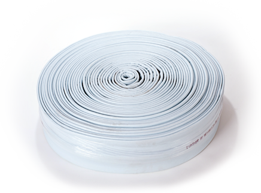

Description: A single or double layer liner with a PUXR (steam polyurethane coating) with fillet and taped joint
Diameter Range: 6, 8, 10, and 12"
Material: 100% polyester with a PUXR external coating
Thickness Range: 3 mm and 4.5 mm (other sizes available)
The liner thickness is the approximate installed thickness after removal of coating. To achieve the installed thickness in accordance with ASTM 1216 the combined curing pressure and fall of the pipe should not exceed the suggested inversion pressures show below:
- Inversion Pressure: .6 bar
- Curing Pressure: .6 bar
- Minimum Pressure: .3 bar
- Maximum Pressure (warm/hot) .8 bar
Seam: Fillet
Seam sealing: tape or taped and stitched
Installation Method(s): Air or water inversion
Resin type: Silicate, epoxy, and polyester
Cure temperature/method: Ambient, hot water or steam < 194°F / 90°C
Impregnation Method: Vacuum and pressure rollers set to a specified gap
Pinch gap roller setting: 8 mm or 11 mm
This information is provided in good faith only and without warranty. All calculations should be verified. The roller gap setting is for guidance only. We strongly recommend that the resin addition be monitored and controlled by adjustment of the roller gap setting. Ultimately, it is the correct resin addition/impregnation that is imperative, not the roller gap.
This liner should be visually inspected for defects before use. Inability to maintain a good vacuum during impregnation may indicate damage. On detection of any defect, the liner should not be used. This liner is only guaranteed when used with the limitations herein. Should it be necessary to use the liner in circumstances outside of these limits please contact us first for advice. We reserve the right to make technical changes without notice as a result of continuous development.
Notes: Can be used unsupported. Used for a maximum bend radius of 45 degrees.